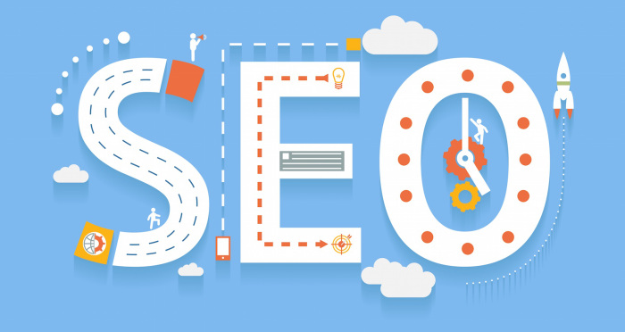

Sitenizi Arama Motorları İçin Optimize Edin!

“Arama motoru optimizasyonu soğuk bir kış günü nefesinizden çıkan buharı yakalamaya benzer” demiş bir düşünür. Onu görebilirsiniz. Onun var olduğunu bilirsiniz. Ama yakalayamazsınız. Arama motoru optimizasyonunun sonuçlarını görebilir, nasıl yapılması gerektiğini çok iyi bilebilir, her şeyi doğru yaptığınız halde nihai hedefe ulaşamayabilir, arama motorları sonuç sayfalarında istediğiniz yere gelemeyebilirsiniz.
Elbette her arama sonuç sayfasında en başta olmanız beklenemez. Arama sonuç sayfalarında, sadece ilk sıradaki web sitesine gittiğinizi düşünün. İlk bağlandığımız web sitesinde aradığımız bilgileri tam olarak bulsak da; bunları doğrulama amaçlı ikinci, üçüncü bazen daha fazla web sitesine de bakarız.
Genel bir kural olarak, tam ve doğru bilginin yanı sıra daha fazlasına ulaşmak için ilk 10 web sitesini ziyaret etmelisiniz. Bunun için sıradan bir web kullanıcısından daha sabırlı olmanız gerekmektedir. Çoğu kullanıcı genellikle ikinci arama sonuç sayfasına bakma ihtiyacı hissetmez. Bu yüzden web yöneticileri sitelerinin arama sonuç sayfalarının ilk sayfasında görüntülenebilmek için büyük bir çaba harcarlar. Eğer bunu yapabiliyorsanız, web siteniz ilk sırada görüntülenmese dahi kendinizi başarılı sayabilirsiniz.
Web siteniz arama sonuç sayfalarında ikinci veya daha gerilerde listeleniyorsa tarafınızdan yapılması gereken bazı çalışmalar olabilir. Daha iyi bir sıralama edinmek için ilk yapmanız gereken web sitenizin konusu ile alakalı anahtar kelimelerle optimizasyon yapmaktır. Anahtar kelimelerinizi tespit ettiniz mi? Cevabınız hayır ise ilk önce bu kelimeleri tespit etmelisiniz.
Web sitenizin içeriği ile alakalı kelimelere anahtar kelimeler denir. Sadece bir anahtar kelimenin web sitenizin içeriğini açıklamada yetersiz kalacağı açıktır. Bu yüzden birden fazla anahtar kelime veya kelime öbeği kullanmalısınız.
Arama motoru tarayıcıları, web sayfalarını anahtar kelimelere göre tanımlar ve kategorize ederler. Google gibi arama motorları, ziyaretçilerinin yaptıkları arama terimlerine hangi sonuçları döndürmeleri gerektiğine bu şekilde karar verirler.
Anahtar kelime, web sitenizi tanıtmak için kullandığınız kelime veya kelime gruplarıdır. Bir web sitesinde reklam verme işlemi de bu kelimelerle yapılmaktadır. İnternet kullanıcıları anahtar kelimelerle arama yaptıklarında, arama sonuç sayfalarında reklamlar görüntülenir. Bu iki işlemi birleştiren Google, AdWords reklamlarını, alakalı olduğunu düşündüğü web sitelerinde yayınlar.
Kaynak: melihogul.wordpress.com
Etiketler: html, css, javascript